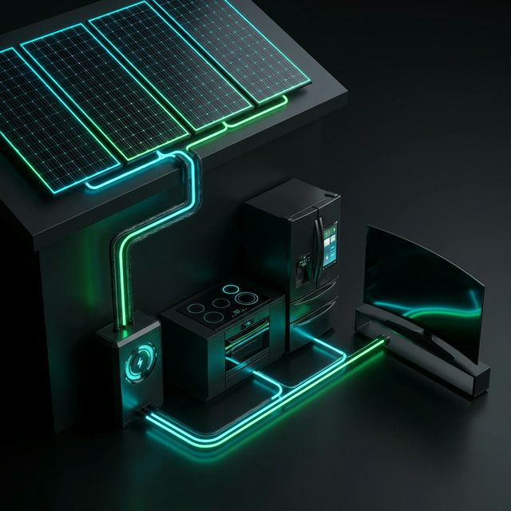

Introduction au Solaire
Depuis février 2024, Octopus Energy France a lancé une nouvelle activité majeure : la commercialisation et l'installation de panneaux photovoltaïques.
Cette activité s'inscrit dans notre objectif global de permettre à nos clients de maîtriser leur consommation, de consommer de la manière la plus locale possible et ainsi de participer activement à la transition énergétique globale.
Notre force : Une offre transparente, sans coût caché et sans aucune sous-traitance Contrairement à la majorité du marché, Octopus emploie ses propres installateurs qualifiés pour garantir une fiabilité totale de l'installation au nettoyage. . L'ensemble des installateurs sont salariés d'Octopus Energy Services France (OESF), ce qui nous permet de garantir une qualité d'exécution et un SAV irréprochable.
Les Bases du Solaire
Il est crucial de comprendre la différence entre les technologies et les unités de mesure que nous utilisons au quotidien avec nos clients pour être parfaitement crédible.
Thermique VS Photovoltaïque
L'Unité de Mesure : Le kWc (Kilowatt-crête)
Le Watt crête (Wc) caractérise la puissance maximale d'un panneau dans des conditions d'ensoleillement et de température optimales. En pratique en un an, un panneau solaire standard de 375 Wc à 400 Wc produit en moyenne entre 270 kWh et 420 kWh selon la région géographique et l'inclinaison.
Taille, Dimensions & Durée de Vie
- Dimensions : Un panneau mesure environ 1m de large sur 1,7m de long. Son épaisseur est d'environ 4 cm pour un poids avoisinant les 18 kg.
- A l'échelle du marché : En France, plus de 85% des installations pour particuliers font 3 kWc ou moins. Chez Octopus, nous installons majoritairement entre 3kWc et 9kWc, et jusqu'à 36kWc.
- Exemple type : Une installation de 3 kWc équivaut à environ 10 panneaux standard (soit 17 m² de toiture). Elle produit entre 2500 et 4000 kWh/an, couvrant la consommation hors-chauffage d'un foyer moyen.
- Durée de vie : Supérieure à 30 ans. Octopus garantit les panneaux 25 ans, avec un rendement certifié de plus de 87% à 30 ans (la perte de rendement est d'environ de 1% par an).
Autoconsommation & Gestion du Surplus
L'autoconsommationFait de consommer sa propre production d'électricité, de manière individuelle ou collective. est le fait de consommer tout ou partie de sa propre production d'électricité. La grande majorité de nos clients sont en "autoconsommation avec injection du surplus".
Exemple Chiffré : Différence entre Autoconsommation et Autoproduction
Ces deux termes sont la clé de la rentabilité. Bien qu'ils semblent similaires, ils mesurent deux choses très différentes. Prenons un exemple sur une journée :
Production Solaire Totale
10 kWh
(Ce que les panneaux ont créé)
Consommation Totale de la Maison
15 kWh
(Ce que la maison a utilisé sur 24h)
Sur les 10 kWh produits, vous avez consommé 6 kWh directement. C'est ce chiffre qui est la clé !
1. Le Taux d'Autoconsommation
On se concentre sur la ligne de production.
"Sur les 10 kWh produits, quelle part ai-je utilisée ?"
(6 / 10) = 60%
Le reste (40% soit 4 kWh) est le surplus injecté sur le réseau. Sans batterie, ce taux stagne souvent entre 20 et 40%.
2. Le Taux d'Autoproduction
On se concentre sur la ligne de consommation.
"Sur les 15 kWh dont j'avais besoin, quelle part vient de mes panneaux ?"
(6 / 15) = 40%
C'est le niveau d'autonomie. Je m'approvisionne encore à 60% auprès de mon fournisseur.
Réconcilier les courbes de Production et de Consommation
Le grand défi du solaire : les panneaux produisent leur maximum à midi en été, tandis que le foyer français consomme son pic le matin et le soir en hiver. Plusieurs solutions :
- Stocker : Investir dans des batteries physiques domestiques (voir module suivant).
- Piloter : Utiliser la domotique pour déclencher des appareils énergivores (lave-linge, ballon d'eau chaude) pendant les pics de soleil.
- Revendre (Valoriser le Surplus) : Les contrats EDF OAEDF Obligation d'Achat : Service mandaté par l'État pour acheter l'électricité verte des particuliers à prix fixe pendant 20 ans. (Aujourd'hui à 0,04 €/kWh en surplus). ou via un acheteur alternatif (comme notre offre Octopus !). L'État fixe le tarif OA chaque trimestre via la CRE.
L'Autoconsommation Collective : Partager l'Énergie
L'autoconsommation collective (ACC) permet à un groupe de producteurs et de consommateurs locaux de se partager l'électricité. Quel que soit le modèle, tous les participants doivent être rassemblés au sein d'une entité légale unique : la PMOPersonne Morale Organisatrice : Souvent une association ou coopérative gérant le contrat collectif avec Enedis..
Deux modèles d'organisation
Le "Soleil Central"
Une seule grande installation centralisée (ex: le toit d'une école ou d'un supermarché) produit pour de nombreux consommateurs alentours.
Le "Village Solaire"
Plusieurs maisons sont à la fois productrices et consommatrices. Elles mutualisent leurs surplus pour l'ensemble du groupe.
Le Fonctionnement Technique : Physique et Numérique
-
1. Le Flux Physique
Le surplus d'électricité est injecté sur le réseau public et, par les lois de la physique, consommé par les bâtiments les plus proches (membres du groupe ou non). Le réseau agit comme un grand "lac". -
2. Le Flux des Données
Toutes les 30 minutes, les compteurs Linky mesurent la production et la consommation. Enedis centralise ces données et "attribue" virtuellement la production locale aux consommateurs du groupe, selon la clé de répartition définie par la PMO. -
3. Facturation
La part d'énergie qui vous est attribuée virtuellement n'est pas facturée par Octopus. Vous la payez directement à la PMO, à un tarif local défini entre les membres.
Technologie : Panneaux & Onduleurs
Nos Panneaux Solaires
Il faut être transparent : 90 à 95% des panneaux solaires installés en France sont de fabrication chinoise. Les cellules photovoltaïques proviennent quasi-exclusivement d'Asie. Octopus propose deux gammes :
- Gamme Standard : Panneaux asiatiques (Chine/Vietnam). C'est le meilleur rapport qualité/prix du marché mondial.
- Gamme Française (Voltec Solar) : Une gamme environ 1000€ plus chère. Voltec Solar (et feu-Systovi) sont les "seuls" fabricants français (et non des marques re-badgées). Cela signifie qu'ils assemblent au moins 30% du panneau sur notre territoire.
L'Onduleur & le Système EMS
Un panneau produit un "courant continu". L'onduleur a la lourde tâche de le réguler et de le transformer en "courant alternatif" compatible avec le réseau de la maison. Son rendement et sa fiabilité sont capitaux.
Le Système de Gestion Énergétique (EMS) : C'est le cerveau de l’installation. Ce boîtier électronique connecté optimise en continu la consommation. Il croise les données de production, de consommation (compteur Linky) et météo pour piloter automatiquement les appareils énergivores (ex: chauffer l'eau ou charger la voiture électrique uniquement quand le soleil brille).

Stockage & Batteries : Changer de Dimension
Les tarifs de rachat étatiques ayant tendance à baisser, l'installation d'une batterie physiqueBatterie au Lithium Fer Phosphate (LFP), d'une grande durabilité (>6000 cycles) avec un risque incendie nul. devient l'atout maître de la rentabilité.
L'Impact massif de la batterie : Une installation classique sans batterie atteint ~35% d'autoconsommation. Avec une batterie de 5kWh à 10kWh, ce taux bondit jusqu'à 80% ! C'est la garantie de soulager drastiquement sa facture nocturne.
Le Pilotage Avancé Octopus
Non seulement nous stockons, mais nous pilotons intelligemment :
- Pince ampèremétrique : Matériel posé sur le compteur LinkyLe compteur intelligent et communicant d'Enedis. Indispensable pour l'autoconsommation (comptabilise électricité soutirée ET injectée).. Dès qu'elle détecte une injection sortante (surplus), elle "ouvre" la batterie pour stocker.
- Gestion Dynamique (par API) : Octopus recharge la batterie l'hiver pendant les Heures Super Creuses la nuit pour s'en servir aux heures de pointes. Du pur génie tarifaire.
Le Piège des "Batteries Virtuelles"
Octopus ne propose PAS de batterie virtuelle. Derrière ce terme marketing très séduisant ("Je stocke mon énergie dans le Cloud"), rien n'est stocké. L'énergie est injectée en direct sur le réseau public à midi, et le fournisseur "prête" un crédit au client le soir, mais en facturant : le coût de l'abonnement mensuel, le coût d'acheminement réseau (le TURPE) et les taxes.
En batterie virtuelle, le client reste en réalité dépendant à 100% du réseau. De plus, il perd souvent le droit aux aides de l'État et aux rachats EDF OA.
Nos Séries Phares : L'Évolution vers SolarBoost
Depuis le début de l'année 2026, Octopus Energy amorce une transition majeure de son offre historique "Solar Plus" vers une offre ultra-innovante centrée sur la tarification dynamique de la batterie : SolarBoost.
L'Historique : Solar Plus
L'offre de lancement, désormais en fin de commercialisation.
- Tarif de fourniture à -3% sous le TRV.
- 428 heures creuses supplémentaires par an (activation en journée l'été).
- Rachat fort du surplus : 0,13€/kWh bloqué sur 3 ans.
🟢 Le Nouveau "Game Changer" : SolarBoost
La première offre combinant rachat de surplus ET pilotage intelligent de la batterie.
- Tarif d'électricité : Fixe sur 3 ans au prix du TRV.
- Rachat du surplus : Aligné au marché à 0,04€/kWh (bloqué 3 ans, par virement annuel).
- Bonus de Pilotage Quotidien : Octopus reverse une "cagnotte" chaque jour où la batterie est prête à aider le réseau. (Exemple : 1€ / jour de gagné pour une batterie 10kWh, soit un gain net garanti de 1095€ sur 3 ans !).
🧮 Simulateur de Gains : Bonus Cagnotte
Testez l'impact de la taille de la batterie sur la Cagnotte finale du client sur 3 ans :
🎁 L'Argument de Vente Massue : 1 An d'Électricité OFFERT
Pour les clients SolarBoost atteignant un Taux de couverture minimal de 80%Équivalent à un plafond de 125% de la production théorique annuelle. Ex: pour 6 kWc installés, on couvre jusqu'à 8250 kWh consommés., Octopus Energy s'engage à payer l'intégralité de leurs factures d'électricité sur les 12 premiers mois suivant l'installation de leurs panneaux !
Éligibilité à SolarBoost
Pour souscrire le client à cette offre exceptionnelle, le Ops doit vérifier 4 critères obligatoires :
- Le client doit être en fourniture d'électricité chez Octopus Energy.
- Il doit posséder une batterie compatible (marques Huawei ou Enphase à ce jour).
- La taille de la batterie (en kWh) doit être supérieure ou égale à la puissance de l'installation (en kWc). Exemple : Batterie 7 kWh obligatoire pour du 6 kWc.
- Le client autorise contractuellement le pilotage de sa batterie (pairage sur l'application Octopus).
L'Économie d'un projet Solaire : Avantages & Fiscalité
La question numéro un de nos clients : "Quel bénéfice j'en tire ?". Et à juste titre !
Les 3 grands avantages économiques
💰 Rentabilité
Une installation 3 kWc coûte entre 8000 et 12000€. Avec nos offres, le seuil de rentabilité est atteint entre 7 à 8 ans dans le Sud et 9 à 10 ans dans le Nord.
🌍 Écologie
Une installation de 3 kWc évite l'émission de plus de 25 tonnes de CO₂ sur sa durée de vie (25 ans).
🏠 Valorisation Immobilière
Une maison équipée gagne 3 à 5 % de valeur à la revente et obtient une bien meilleure étiquette au DPE.
Les Subventions de l'État
- La Prime à l'autoconsommation : Versée l'année suivant l'installation, sans aucune condition de revenus. Elle est de 80 € / kWc (soit de 240 à 300€ environ sur 3kWc suivant les révisions). Le client doit impérativement vendre le surplus.
- Le contrat EDF OA : Vente du surplus garanti 20 ans (tarif fixe fixé par l'Eta via la convention CRAE : 0,04 €/kWh).
La subtilité de la TVA Solaire en 2026
| Taux de TVA | Les Conditions (Cumulatives !) |
|---|---|
| 20 % (Taux Normal) | Soumis d'office si : Logement neuf (< 2 ans), ou Installation dépassant les 9 kWc, ou Projet réalisé sans artisan RGEReconnu Garant de l'Environnement. Certification de l'État que toutes nos équipes possèdent.. |
| 10 % (Intermédiaire) | Logement de plus de 2 ans ET Puissance minime (≤ 3 kWc) ET Artisan RGE. |
| 5.5 % (Super-réduit) | La nouveauté écologiqueA pour but d'encourager la pose d'installations bas carbone avec domotique énergétique. : Logement > 2 ans ET Puissance (≤ 9 kWc) ET Artisan RGE ET Présence d'un gestionnaire EMSEnergy Management System : Pilote la consommation (chauffage, VE) pour l'aligner sur la production solaire. (boîtier intelligent) ET Bilan Carbone des panneaux très strict (≤ 530 kgCO2). |
Déclaration aux Impôts des revenus solaires 📄
Même si nous gérons la revente du surplus, le client **a l'obligation légale de déclarer ces revenus** chaque année via le formulaire Cerfa 2042 C Pro. Mais attention, la taxation dépend d'un seuil clé :
⚡ Installation ≤ 3 kWc
Les revenus issus de la vente de surplus sont totalement exonérés d'impôt sur le revenu et de prélèvements sociaux (à condition qu'il s'agisse d'un usage résidentiel avec 2 points de raccordement maximum). Les gains doivent juste figurer dans la case "revenus nets exonérés". C'est un pur bonus net pour le client !
📈 Installation > 3 kWc
(Ex: 4 kWc, 6 kWc, 9 kWc). Les revenus sont
imposables sous le régime du Micro-BIC (Bénéfices Industriels et
Commerciaux).
La bonne nouvelle : L'État applique un
abattement forfaitaire massif de 71 %. Le client n'est donc imposé que sur
les 29 % restants de ses bénéfices. De plus, les 305 premiers euros sont exonérés d'office.
Et le Recyclage dans tout ça ? ♻️
C'est une objection fréquente des clients : "les panneaux ne se recyclent pas". C'est totalement faux.
En France, le recyclage est extrêmement bien structuré. À la fin de leur cycle de vie (plus de 30 ans), les panneaux sont récupérés par l'éco-organisme agréé par l'État : SorenSoren collecte et recycle les panneaux solaires usagés en France métropolitaine et Outre-mer, financé par une éco-participation lors de l'achat..
Actuellement, un panneau solaire (composé de verre, d'aluminium, de silicium et de cuivre) est recyclé à hauteur de 95 % !
Nos Zones d'Intervention & Le Workflow
Où installons-nous ? (Carte des Départements)
À ce jour, nos équipes d'installateurs internes Octopus Energy Services France (OESF) opèrent exclusivement dans le quart Nord-Ouest et Ouest de la France. Le client doit impérativement résider dans l'une des zones suivantes :
1. Qualification & Typeform
Vérification de l'éligibilité. Le client doit habiter notre zone logistique listée ci-dessus, avoir une toiture de >15m², connectée au réseau public (ENEDIS), couverte sans trace d'amiante. S'il n'est pas éligible, il est averti par mail automatiquement.
2. Appel Commercial (Sous 48H)
Calibrage précis de la consommation (via données Linky), ajustement de la puissance (faut-il du 6kWc ou plutôt du 9kWc avec Batterie ?). Edition du Devis.
3. Administratif (DP & Enedis)
Octopus constitue le dossier. L'Urbanisme de la mairie a généralement 1 mois pour valider le projet. Il faut également créer un dossier chez Enedis : CAE ou CACSICe sont 2 choses différentes ! Le CAE (Contrat d'Accès et d'Exploitation) est obligatoire si on revend notre surplus (notre modèle standard avec EDF OA). La CACSI est une convention stricte SANS injection de surplus sur le réseau..
4. L'Installation & Consuel
Réalisée en 1 seule journée par NOS équipes. Un organisme consulaire (Consuel) validera ensuite l'intégrité électrique du réseau pour donner son feu vert à la revente.
Organisation SAV Octopus
Chez nous, nos équipes SAV se divisent en deux entités dédiées, avec pour point de contact central `solaire@octopusenergy.fr` :
- Niveau 1 "Distance" : 80% des tracas (mises à jour d'onduleurs, reboot, app qui freeze).
- Niveau 2 "Intervention Physique" : Des vrais techniciens Octopus qui se rendent sur site pour changer des pièces (et non des sous-traitants désintéressés). C'est le pilier de notre marque de fabrique.
Rappel des Garanties de l'électronique Solaire : Même si l'Europe ne demande souvent que 2 ans de base, dans le circuit Solaire les garanties sont prodigieuses. Les onduleurs sont garantis 25 ans. Les batteries entre 10 et 15 ans selon les constructeurs. Une fois cette garantie échue, la batterie fonctionne toujours très bien, mais le constructeur ne gère plus les pannes gratuitement.